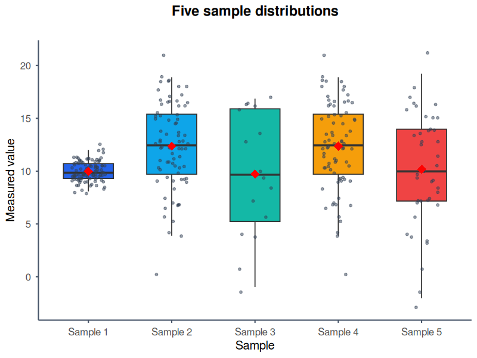

Create publication-ready plots from an AI assistant
The public BoxPlotR MCP server turns CSV or TSV data into box, violin and bean plots. It works without an account or API key and returns PNG, SVG or PDF output directly to the client.
Public endpointhttps://mcp.chemgrid.org/boxplotr/
5 MiBMaximum dataset per request
20 per dayPlot generations per client IP
10 concurrentPlot jobs across the service
Register the service
Codex users can register the remote Streamable HTTP endpoint with one command:
Then ask the assistant to call generate_boxplot. Claude Desktop, Antigravity and other remote-MCP clients can use the same URL. No authorization header is required.
Examples generated through the public MCP server

Points and means
Show the observations behind each summary
The bundled five-sample CSV uses custom colours, jittered raw points and red diamonds for sample means. This makes distribution spread and outliers visible alongside medians and quartiles.
Example promptUse the BoxPlotR MCP tool with the attached five-sample CSV. Create a vertical ggplot2 box plot titled “Five sample distributions”. Label the axes “Sample” and “Measured value”, use five distinct blue, cyan, teal, amber and red colours, show the individual jittered observations, add sample means, and return a PNG.
The bundled text scenario is rendered with the ggplot2 engine and Nature-style typography. Violin geometry exposes density while overlaid points retain the individual observations.
Example promptUse the BoxPlotR MCP tool with the attached three-sample CSV. Create a vertical violin plot with the ggplot2 engine and Nature style. Title it “Distribution shape by sample”, label the y-axis “Measured value”, colour the groups green, orange and purple, overlay the raw observations, omit mean markers, and return a PNG.
The supplied Excel example contains Baseline, Treated and Knockout measurements on very different scales. After a checked CSV conversion, logarithmic rendering keeps all three conditions legible.
Example promptRead the attached Excel example, use its Baseline, Treated and Knockout columns, and call the BoxPlotR MCP tool. Create a ggplot2 box plot using Science style and a logarithmic y-axis. Title it “Responses across measurement scales”, use blue, red and teal fills, add mean markers without raw points, and return a PNG.
This original demonstration follows the visual language of Figure 11a in the public Economist Impact LAC Infrascope 2021/22 report: a restrained background, direct labels and three strongly separated categories.
The values are illustrative, reconstructed from the published chart ranges, and are not the report's underlying dataset. Source: Economist Impact, Figure 11a.
Example promptUse the BoxPlotR MCP tool with the attached illustrative score data. Recreate the restrained editorial look of Economist Impact Figure 11a without copying the original figure. Make a vertical ggplot2 box plot in Economist style titled “Overall index score by risk-allocation score”. Label both axes clearly, colour Score 0 red, Score 50 grey and Score 100 blue, omit raw points and means, and return a PNG. State that the values are illustrative.
Available modifications include plot type, rendering engine, journal or editorial style, orientation, logarithmic scaling, title and axis labels, group colours, raw-point overlays, mean markers and output format.
Privacy and fair use
Datasets and raw client addresses are not sent to Google Analytics. Client addresses are immediately converted to one-way pseudonymous identifiers for quota enforcement and usage reporting. Temporary generated files expire automatically.